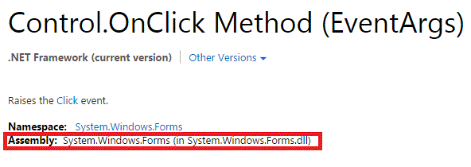

// Size of array of structs struct TargetsCombination InvalidSequences[] = { InvalidSocketDimmSquence, InvalidSocketDimmSquence2 }; int foo = sizeof(InvalidSequences)/sizeof(InvalidSequences[0]); // Variable sized string array char* names4[]={"John", "Paul", "George", "Ringo"}; // Four elements LEN = (sizeof(names4)/sizeof(names4[0])); // However if above string array is inside of a struct, then need to define array length as some max length possible, then go until strings == NULL typedef struct TargetsCombination { char *pTargets[MAX_ELEMENTS]; unsigned int NumTargets; char *pErrString; } TARGETS_COMBINATION; while(pTarget != NULL) {
Not that I found them right away, but this is an example of real code with real bugs.
The spec describes it as alternating between two flog entries, updating them one at a time so as to never corrupt the known good state. Answers afterwards:
Reference code: https://github.com/pmem/pmdk/blob/cc2f2ba1ae578fb17ee18fe9b049ecde77bd2060/src/libpmemblk/btt.c#L590
STATIC EFI_STATUS BttFlogUpdate( IN BTT *pBtt, IN ARENAS *pArena, IN UINT32 Lba, IN UINT32 OldMap, IN UINT32 NewMap ) { UINT8 CurrentFlog = 0; BTT_FLOG_PAIR FlogPair; UINT64 NewFlogOffset = 0; SetMem(&FlogPair, sizeof(FlogPair), 0x0); NVDIMM_VERB("pBttp=%p pArena=%p LBA=%x OldMap=%d NewMap=%d", pBtt, pArena, Lba, OldMap, NewMap); if(!pBtt || !pArena) { return EFI_INVALID_PARAMETER; } // Curent flog(0 or 1) is calculated from the stored value of Next flog as !Next CurrentFlog = !(pArena->pFlogs[0].Next | 0xFE); FlogPair = pArena->pFlogs[0].FlogPair; FlogPair.Flog[CurrentFlog].Lba = Lba; FlogPair.Flog[CurrentFlog].OldMap = OldMap; FlogPair.Flog[CurrentFlog].NewMap = NewMap; FlogPair.Flog[CurrentFlog].Seq = NSEQ(FlogPair.Flog[CurrentFlog].Seq); NewFlogOffset = pArena->pFlogs[0].Entry; EFI_STATUS WriteResult = WriteNamespaceBytes (pBtt->pNamespace, NewFlogOffset, &FlogPair, sizeof(BTT_FLOG_PAIR)); if(EFI_ERROR(WriteResult)) { return WriteResult; } /* Flog Entry written successfully, update run-time state */ pArena->pFlogs[0].Next = 1 - pArena->pFlogs[0].Next; pArena->pFlogs[0].FlogPair.Flog[CurrentFlog].Lba = Lba; pArena->pFlogs[0].FlogPair.Flog[CurrentFlog].OldMap = OldMap; pArena->pFlogs[0].FlogPair.Flog[CurrentFlog].NewMap = NewMap; pArena->pFlogs[0].FlogPair.Flog[CurrentFlog].Seq = NSEQ(pArena->pFlogs[0].FlogPair.Flog[CurrentFlog].Seq); NVDIMM_VERB("update Flog[0]: Lba=%d old=%d%s%s new %d%s%s", Lba, OldMap & BTT_MAP_ENTRY_LBA_MASK,(OldMap & BTT_MAP_ENTRY_ERROR) ? " ERROR" : "", (OldMap & BTT_MAP_ENTRY_ZERO) ? " ZERO" : "", NewMap & BTT_MAP_ENTRY_LBA_MASK, (NewMap & BTT_MAP_ENTRY_ERROR) ? " ERROR" : "",(NewMap & BTT_MAP_ENTRY_ZERO) ? " ZERO" : ""); return EFI_SUCCESS; }
I found at least 4:
Classes, so you can write generic sort algorithms like Python/C++.
Exceptions, so you don't have to check for failure codes at every execution.
Compilers align structs front and back to the largest scalar member, adding padding as necessary. http://www.catb.org/esr/structure-packing/
#include “../../bar/foo.h” = Provide the relative path to this directory
#include <foo.h> = Let the compiler find the path to foo.h from among the include directories.
// What external libraries (implementation, *.c) do we want to link with // Also, a string library should be separate from COMMON library. We only need strings, not a whole bunch of stuff! target_link_libraries(firmware_interface driver_interface ${COMMON_LIB_NAME}) // What external includes (headers, definitions, *.h) do we want to include target_include_directories(firmware_interface PUBLIC ../ ./ src/common )
static int (* const g_ixp_lookup[IXP_PROP_KEY_MAX])(unsigned int handle, struct ixp_prop_info props[], int num_props) = { function1, function2, };
Need to Clean/Rebuild project sometimes if breakpoints are hollow and say “code is out of date”. Things seem to work better then.
To get Visual Studio loading libraries, you go to Project→Add Reference. Automation is UIAutomation 
To run something inside the project, right click on an executable looking thing then do “Set as Startup Project” or “Debug”.
System.Diagnostics.Debug.WriteLine will display in the output window. (Ctrl+Alt+O)
{kind=link}